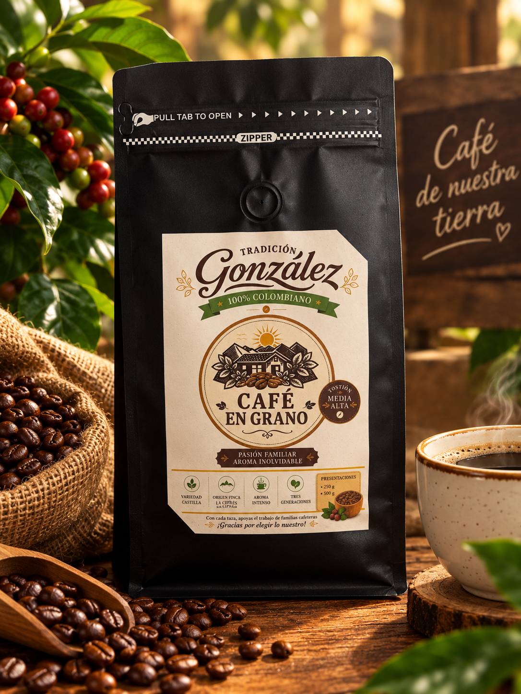
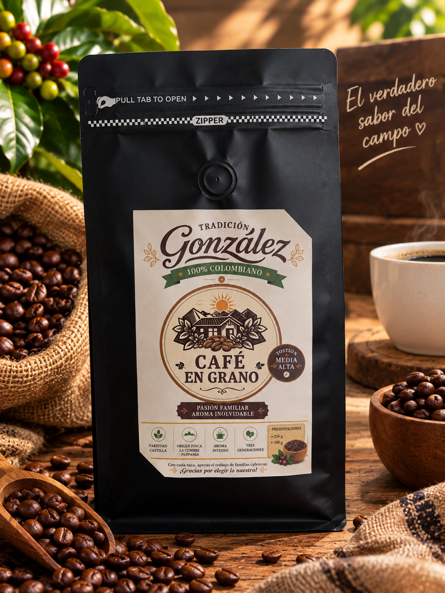

Nuestras presentaciones
☕ 100% Colombiano
En esta parte queremos mostrarles nuestro café
y las diferentes presentaciones en las que lo
ofrecemos. ☕🌱
Cada bolsa tiene nuestro estilo y representa
el trabajo y la dedicación que hay detrás de
cada café.
Esperamos que conozcan nuestro producto y que
les guste tanto como a nosotros nos gusta
prepararlo.

☕ Café en grano $35.000
Café en grano de 500 g, ideal para quienes disfrutan moler su café al momento de prepararlo.

☕ Café molido $35.000
Café molido de 500 g, listo para preparar y disfrutar de todo su aroma y sabor.